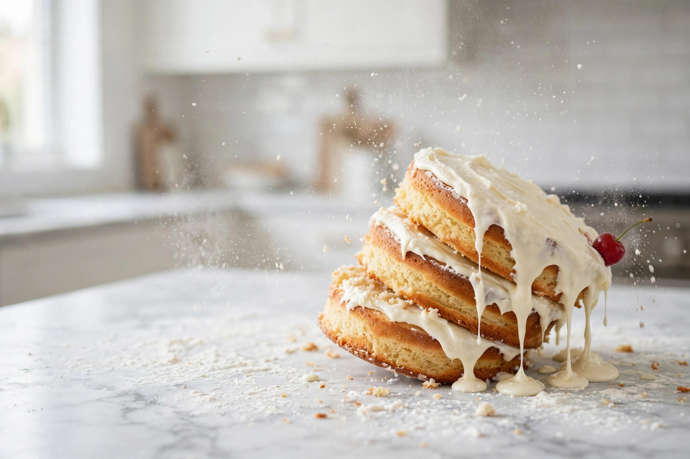

🍰Fan favorite
Ugly Cakes That Taste Amazing
Lopsided, lumpy, and leaning — an ode to the homemade masterpieces that will never make a magazine cover but always make the room go quiet.
Because a cake that leans still tastes like cake
Welcome to the kitchen where the cakes lean, the cookies spread into blobs, and the meringues look like clouds that gave up. Funny Baking Ideas is a warm celebration of baking gone gloriously wrong — and how to laugh at it, rescue it, or prank someone with it. Taste first, photograph second, apologize never.
🍰 Meet the ugly cakes
Lopsided, lumpy, and leaning — an ode to the homemade masterpieces that will never make a magazine cover but always make the room go quiet.
Sunken middles, burnt bottoms, cracked tops: honest rescue tactics that turn disaster into dessert. Nobody has to know.
Decorating projects of wildly varying accuracy. A step-by-step-ish guide to immortalizing your dog, cat, or uncooperative hamster in royal icing.
Jellies, flans, panna cottas, and mousses — scientifically-ish ranked by jiggle. The wobble is the point.
Harmless, food-safe trick treats: sweet things that look savory, familiar things that taste surprising. Nobody gets hurt, everybody gets dessert.
The cake is ugly and the party is in two hours: triage, cover-up kit, and the 20-minute chocolate-shard rescue.
Caramel sliding off apples, weeping deviled-egg eyeballs, soggy mummy dogs — rescues for every spooky bake gone wrong.
Soda for powder, purées for eggs, soured milk miracles: a scorecard of pantry swaps with the exact ratios that rescue a bake — and the ones that ruin it.
Crumb coats as glue, piped dams, levelling, and dowels: what to do when the frosting stops being decoration and starts being the building.
A cup is not a weight: real conversions, the scoop-and-compact disaster, and the weigh-or-spoon fix that retires brick loaves for good.
Twelve cookies went in, one cookie came out: the over-creaming vs warm-butter dispute settled by symptoms, and second careers for the slab.
Underbaked or overbaked? Both camps can be right: the symptom table that tells the two craters apart, and the filling that hides the evidence.
Beads on top and a puddle underneath are two different accidents: the diagnosis, the three meringues ranked, and the rescue for a crying pie.
The starter is not dead, it is dramatic: what hooch means, the 50-gram comeback feed, and the ripe test that ends the drama.
The bottom came up pale and floppy: the fruit-pie re-bake, the skillet slice, the custard trifle conversion, and the hot-stone prevention stack.
Cracked, wrinkled, or hollow: sort the batch, let the 24-hour maturation repair what it can, and dip the rest into plausible deniability.
A lid like a roofing tile over a centre like batter: the 25-degree drop, the foil tent, the rotate, and the settings that retire the sequel.
Soup filling, sliding layers, shredded slices: the rescue ladder from more chill time to the re-whip, plus the hot-knife finish that hides everything.
The cake baked beautifully and then refused to leave the pan. Work the escalation ladder in order — cool, steam, warmth, the fat rule — before…
A split ganache is not fixed by whisking harder. Read the cause first — too-hot cream, overwhipping, or unmelted chocolate — then use the small,…
Tunnels in the crumb and peaks on top look like one failure, but they have two different causes. Tunnels really are overmixing — peaked tops have a…
The technical looks doable from the sofa — until the clock, the thin instructions, and a real loaf of bread get a vote. Which challenges survive a home kitchen, and which were television all along.
The cake cracked, the pie dropped, the frosting melted — and guests are coming. Triage by the clock: rebuild it, cover it, or replace it, then serve it like it was always the plan.
Wax on the frosting, candles that refuse to go out, flames gone before the song ends: a mishap-by-mishap triage for the candle moment, with the official fire-safety rules folded in.
“Bake badly, laugh heartily, eat anyway.”
Our official motto — approved by every leaning cake we've ever loved.